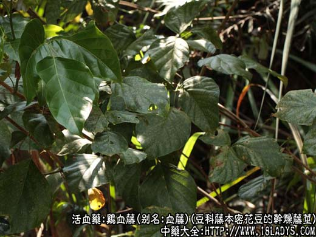
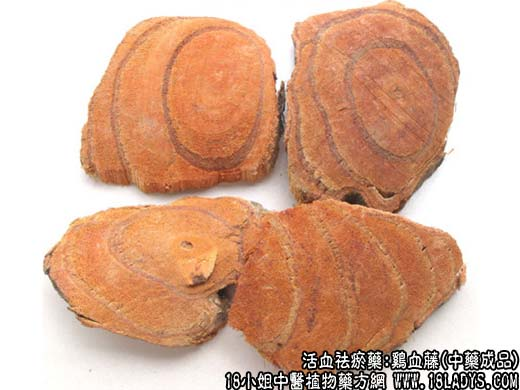
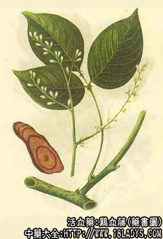

鸡血藤为较常用中药。始载《植物实图考》。现市售商品来源复杂，植体命名不一，商品形态也有差异。中药大全和大家一起来了解鸡血藤图片及鸡血藤的功效与作用。

鸡血藤源植物图片

鸡血藤图片

药书上鸡血藤图片
别名：血藤。
来源：为豆科藤本植物白花油麻藤密花豆、香花崖豆藤鸡血藤等的干燥藤茎。野生。鸡血藤《中药志》定名为白花油麻藤《中药鉴别手册》定名为密花豆，南京《药材学》定名为昆明鸡血藤，但这三本书上所绘制的鸡血藤横切面图谱基本相似，这三种藤茎有否不同之处，还待今后调查研究。
产地：主产于广西、云南、广东等地。
性状鉴别：呈扁圆柱形，稍弯曲，直径1.5~5厘米或更大些，长达10余米或更长，多截成1米左右的段。表皮灰棕色，有明显的纵沟棱以及点状皮孔。横切片呈不规则的扁圆片状、厚2~5毫米，木质部淡红棕色，密布孔洞导管，似带血鹿茸切成的砂片；韧皮部形成环圈和偏向一侧的半圆形环圈数个，上面有红棕色树脂状分泌物。其中第一环圈中央有凹入的圆形小髓心。质坚硬而脆。气微，味涩微苦。
此外天津市尚运销福建产的鸡血藤片，鸡血藤较粗大，多为斜切片，直径3~10余厘米，厚0.5~2厘米。表皮较粗糙，亦有由渗出物形成的深棕色环圈，呈同心环状或偏心环状，中央有髓心或无髓心，木质部淡红棕色，导管孔洞不及以上商品清晰紧密。断面较粗糙显纤维性。质略轻泡。气味同上。按《中药鉴别手册》记述原植物应为常春油麻藤。
以藤片均匀，切面有渗出物、形成的环圈数层，质坚实者为佳。
主要成分：香花岩豆藤含鸡血藤醇和铁质。
功效与作用：行血通脉，暖腰膝。现代实验初步发现有降低血压作用：对离体子宫有抑制作用，对在位子宫有兴奋作用，能增强子宫节律性收缩；对小白鼠子宫24小时总磷代射有促进作用。
炮制：切片，生用。
性味：苦，温。
归经：入肝、肾经。
功能：补血行血，通经络，强筋骨。
主治：血虚之月经不调，肌肉麻木，筋骨无力，腰膝酸痛，瘫痪等症。
临床应用：用于养血补血、活血祛风而通络止痛。
1、治风湿痹痛。平素气血虚弱而患有慢性风湿的老人和妇女最适用，多配补血药和祛风湿药，如桑椹子、乌豆衣等，或配牛膝、半枫荷、枫香寄生，防已，海风藤等，方如鸡血藤汤。
2、治老人手足萎弱、麻木瘫痪、眩晕，由血脉瘀滞、类中风等引起者（包括脑血管意外所致的肢体瘫痪在内），可在病情稳定期用鸡血藤调补气血、行滞而活络，配桑椹子、丹参、杜仲、山萸肉等。
3、治月经不调、经闭腹痛，由血虚引起者较适宜，常配四物汤同服。
4、近年来，用于治疗肿瘤患者在放射治疗过程中引起的白细胞减少，收效较迅速而持久，用后3~4天即见白细胞开始回升。可用鸡血藤30g，配黄芪15g，大枣5枚，水煎服，或服鸡血藤片剂、糖浆剂。
5、试用于治疗再生障碍性贫血，以鸡血藤60~120g，鸡蛋2~4只，八碗水煎成大半碗水，每口一剂，长期服用。又可配其他补血药和何首乌、熟地、当归等，方如再障方。
附：1、鸡血藤药性平和，连续服用2~3个月一般也未见有什么副作用，有虚火者也可服；
2、鸡血藤胶（膏）药性和功用与鸡血藤基本相同，但补力更胜，补血气、强筋骨功效更好。
用量：鸡血藤每日用15~60g，分2~3次服。亦可浸酒服。鸡血藤胶用9~15g，最好在服其他汤药时焗溶调匀后温服。也可以早晚用温开水溶化后服，有饮酒习惯者可用酒溶服。
处方举例：1、鸡血藤汤：鸡血藤15g，半枫荷30g，当归15g，牛膝9g，枫香寄生15g，海风藤15g，豆豉姜15g，水煎服。
2、再障方：鸡血藤30g，首乌2.4g，丹皮9g，熟地15g，五爪龙30g，地稔30g，云苓15g，白术15g，当归12g，水煎服（必要时加阿胶9g）。
注：除上述鸡血藤外，江西省有豆科植物丰城鸡血藤又名山鸡血藤，鸡血藤呈圆柱形，只有一圈渗出物形成的圆形环圈。广西另用豆科亮叶鸡血藤作鸡血藤使用。云南禄劝县使用豆科植物巴豆藤作鸡血藤使用。云南风庆县（古称顺宁）使用木兰科异型南五味子和中间南五味子的藤茎作鸡血藤使用，鸡血藤据《中国药学大辞曲》记载为清代原作鸡血藤。
1961年前华北、东北、中南、华东、多数地区以木通科植物大血藤（红藤）作鸡血藤使用。
1961年《中药志》第三册出版后有些地区根据第三册的说明已逐步更，但现仍有部分地区作鸡血藤用。云南、江西、广西等鸡血藤产地，多用当地产品加工成鸡血藤膏运销各地，有的在熬膏时加入部分副料，如云南风庆县鸡血藤膏取糯米、麦芽作成的糖浆和红花、续断、牛膝、黑豆煮成的药液，再和鸡血藤原膏三者混膈，浓缩成膏。鸡血藤呈长方块状，表面黑褐色，平滑而有光泽，气微香，味甘涩。
《中药志》记载风庆鸡血藤膏据称系用丰城鸡血藤加工而成，但据《中药鉴别手册》记述云南风庆使用的鸡血藤为木兰科异型南五味子和中间五味子的藤茎。
了解更多关于鸡血藤的功效与作用，为您推荐如下内容↓↓↓↓